前面所接触的一般都是监督学习，而除了有监督学习，互联网上更多的数据都是没有标签的，所以这就引出了无监督学习。
无监督学习不是没有标签，而是数据本身就是标签，通过神经网络找出数据内在的特征，然后再重构出数据本身，这就是自编码器 Auto-Encoders
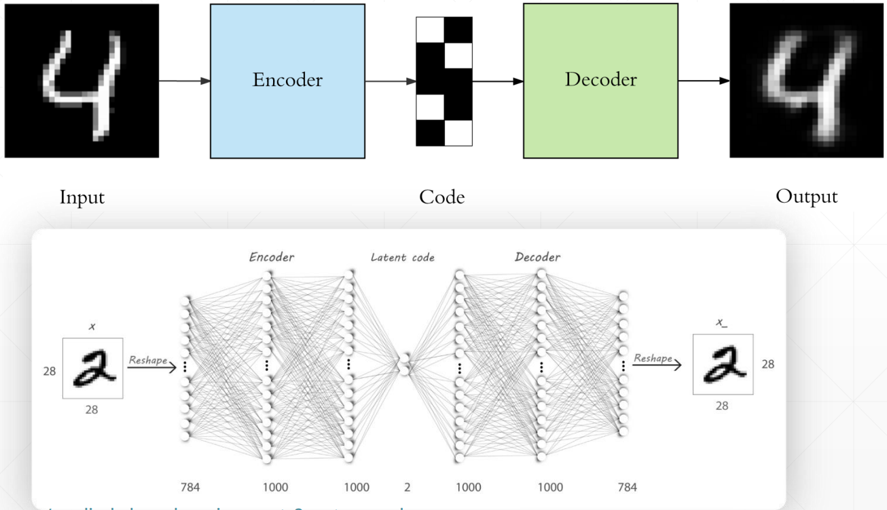
这个过程其实就是要找到数据本质的特征，和 PCA 降维类似，通过 Auto-Encoders 找到降维后的特征后，我们就可以方便的将其可视化出来了，比如这个比较著名的可视化网站：Embedding projector - visualization of high-dimensional data (tensorflow.org)
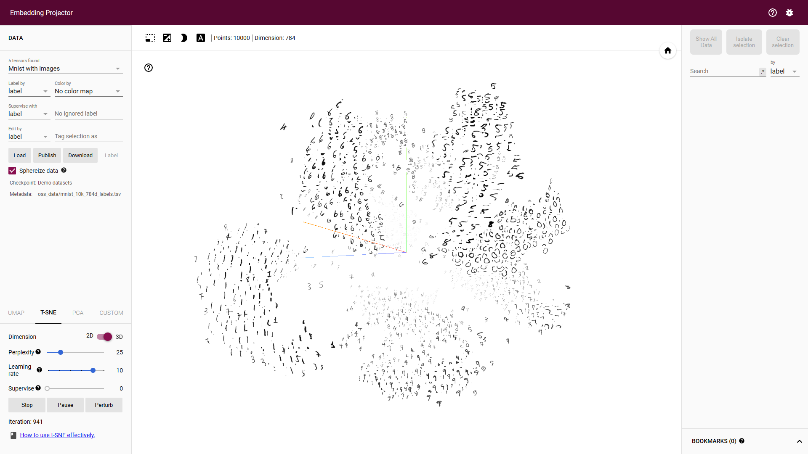
# PCA V.S. Auto-Encoders
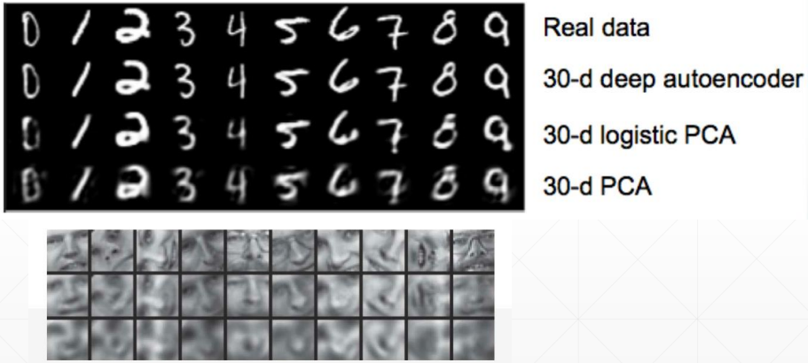
可以看到 Auto-Encoders 重建出来的数据效果还是明显优于 PCA 的
# Auto-Encoders 变种
# Denoising AutoEncoders
为了防止神经网络记住训练数据集，所以在训练数据中添加一个高斯噪声，逼迫神经网络真正学到数据的特征。
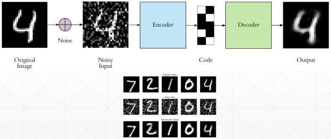
# Dropout AutoEncoders
同样也是为了防止过拟合，所以添加一个适当的 Dropout，可以提升测试集上的准确率，如最右边的图
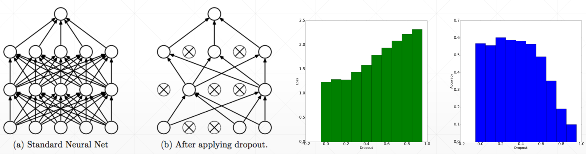
# Adversarial AutoEncoders
如果将隐藏层的数据分布可视化出来，可以发现它的分布是有偏的，如下
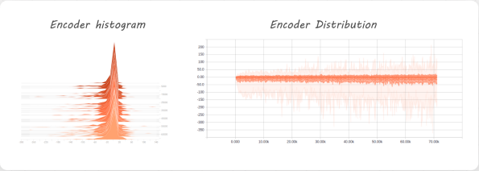
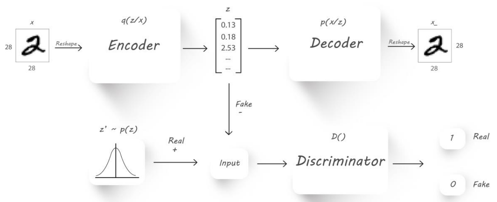
所以我们也想尽可能将这个分布也学习到，就借鉴 GAN 的思想，引入一个鉴别器，专门用来学习隐藏层的分布
# Variational AutoEncoders
相关资料：Variational autoencoders. (jeremyjordan.me)
KL 散度，用来衡量两个分布间的差异，详情：Kullback-Leibler (KL) 散度介绍
所以和上面的 Adversarial AutoEncoders 类似，变分自编码器通过 KL 散度来学习隐藏层的分布，如下
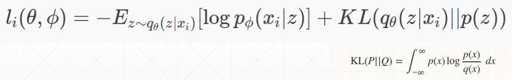
可以看到公式中被加号分为了两个部分，第一部分就是希望模型尽可能的学习到特征 z，然后通过特征 z 再重构出 x
第二部分就是 KL 散度的计算，KL 散度越小，表示两个分布之间的差异越小，所以第二部分就希望模型尽可能学习到特征的分布
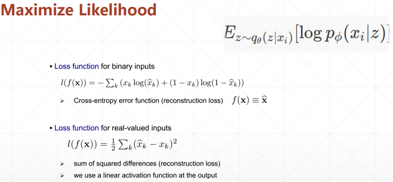
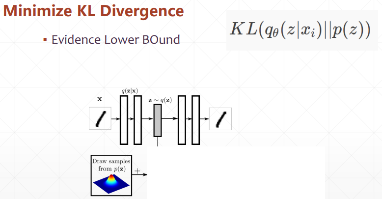
# KL 散度的计算
参考：normal distribution - KL divergence between two univariate Gaussians - Cross Validated (stackexchange.com)
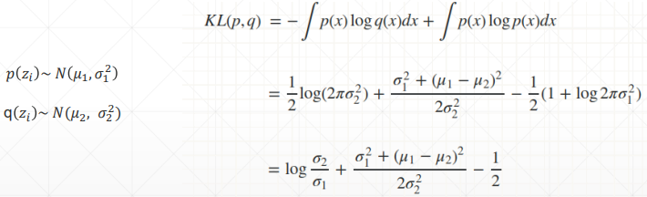
# Reparameterization trick
因为现在隐藏层变成了一个分布，所以需要从分布中进行取样，但取样又会造成无法求梯度的问题，也就是无法反向传播，所以，使用一个小 trick，如下
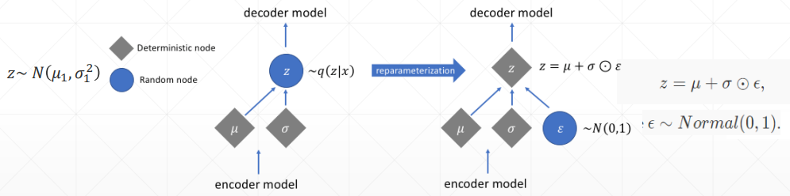
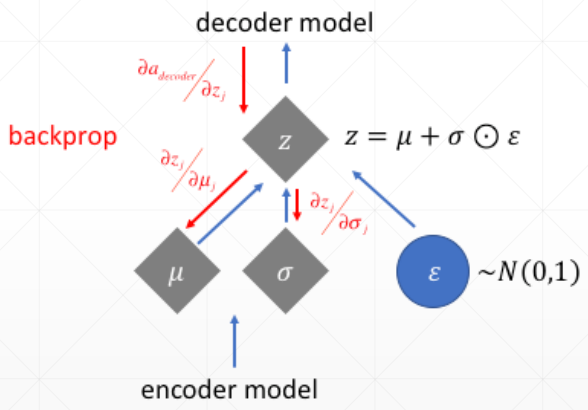
将取样的过程拆除出来，模型反向传播的过程就可以避开它，从而可以优化参数 μ 和 σ
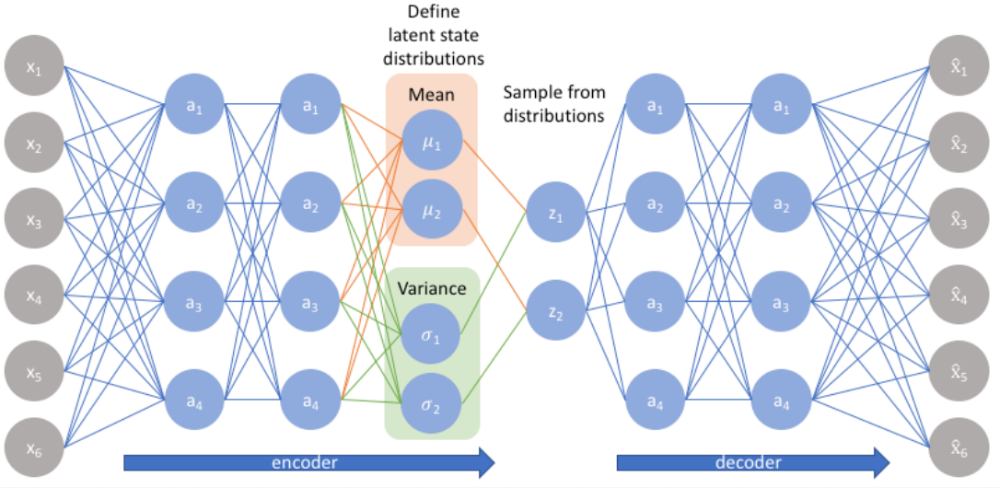
# 应用
通过在分布上取样不同的点，就可以调整生成的结果，如下
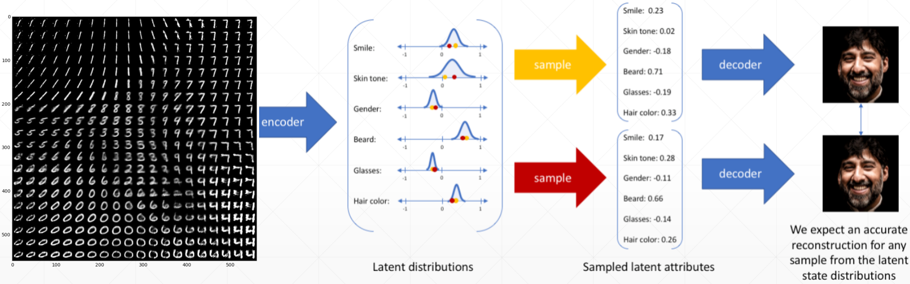
这和 GAN 类似，但实际上自编码器还是重建的是数据本身，无法自己创造出新的数据，而且重建的数据效果也往往没有 GAN 好
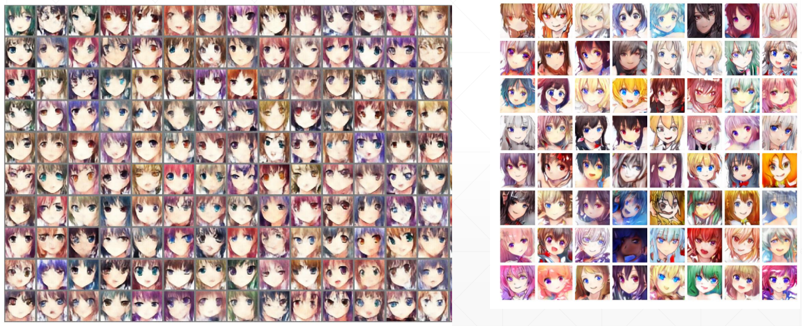
左边是变分自编码器，右边是 GAN
# 代码实战
# Auto-Encoders 代码
import torch | |
from torch import nn | |
class AE(nn.Module): | |
def __init__(self): | |
super(AE, self).__init__() | |
# [b, 784] => [b, 20] | |
self.encoder = nn.Sequential( | |
nn.Linear(784, 256), | |
nn.ReLU(), | |
nn.Linear(256, 64), | |
nn.ReLU(), | |
nn.Linear(64, 20), | |
nn.ReLU() | |
) | |
# [b, 20] => [b, 784] | |
self.decoder = nn.Sequential( | |
nn.Linear(20, 64), | |
nn.ReLU(), | |
nn.Linear(64, 256), | |
nn.ReLU(), | |
nn.Linear(256, 784), | |
nn.Sigmoid() | |
) | |
def forward(self, x): | |
""" | |
:param x: [b, 1, 28, 28] | |
:return: | |
""" | |
batchsz = x.size(0) | |
# flatten | |
x = x.view(batchsz, 784) | |
# encoder | |
x = self.encoder(x) | |
# decoder | |
x = self.decoder(x) | |
# reshape | |
x = x.view(batchsz, 1, 28, 28) | |
return x, None |
# Variational AutoEncoders 代码
import torch | |
from torch import nn | |
class VAE(nn.Module): | |
def __init__(self): | |
super(VAE, self).__init__() | |
# [b, 784] => [b, 20] | |
# u: [b, 10] | |
# sigma: [b, 10] | |
self.encoder = nn.Sequential( | |
nn.Linear(784, 256), | |
nn.ReLU(), | |
nn.Linear(256, 64), | |
nn.ReLU(), | |
nn.Linear(64, 20), | |
nn.ReLU() | |
) | |
# [b, 20] => [b, 784] | |
self.decoder = nn.Sequential( | |
nn.Linear(10, 64), | |
nn.ReLU(), | |
nn.Linear(64, 256), | |
nn.ReLU(), | |
nn.Linear(256, 784), | |
nn.Sigmoid() | |
) | |
self.criteon = nn.MSELoss() | |
def forward(self, x): | |
""" | |
:param x: [b, 1, 28, 28] | |
:return: | |
""" | |
batchsz = x.size(0) | |
# flatten | |
x = x.view(batchsz, 784) | |
# encoder | |
# [b, 20], including mean and sigma | |
h_ = self.encoder(x) | |
# [b, 20] => [b, 10] and [b, 10] | |
mu, sigma = h_.chunk(2, dim=1) | |
# reparametrize trick, epison~N(0, 1) | |
h = mu + sigma * torch.randn_like(sigma) | |
# decoder | |
x_hat = self.decoder(h) | |
# reshape | |
x_hat = x_hat.view(batchsz, 1, 28, 28) | |
kld = 0.5 * torch.sum( | |
torch.pow(mu, 2) + | |
torch.pow(sigma, 2) - | |
torch.log(1e-8 + torch.pow(sigma, 2)) - 1 | |
) / (batchsz*28*28) | |
return x_hat, kld |
# Main 代码
import torch | |
from torch.utils.data import DataLoader | |
from torch import nn, optim | |
from torchvision import transforms, datasets | |
from ae import AE | |
from vae import VAE | |
import visdom | |
def main(): | |
mnist_train = datasets.MNIST('mnist', True, transform=transforms.Compose([ | |
transforms.ToTensor() | |
]), download=True) | |
mnist_train = DataLoader(mnist_train, batch_size=32, shuffle=True) | |
mnist_test = datasets.MNIST('mnist', False, transform=transforms.Compose([ | |
transforms.ToTensor() | |
]), download=True) | |
mnist_test = DataLoader(mnist_test, batch_size=32, shuffle=True) | |
x, _ = iter(mnist_train).next() | |
print('x:', x.shape) | |
device = torch.device('cuda') | |
# model = AE().to(device) | |
model = VAE().to(device) | |
criteon = nn.MSELoss() | |
optimizer = optim.Adam(model.parameters(), lr=1e-3) | |
print(model) | |
viz = visdom.Visdom() | |
for epoch in range(1000): | |
for batchidx, (x, _) in enumerate(mnist_train): | |
# [b, 1, 28, 28] | |
x = x.to(device) | |
x_hat, kld = model(x) | |
loss = criteon(x_hat, x) | |
if kld is not None: | |
elbo = - loss - 1.0 * kld | |
loss = - elbo | |
# backprop | |
optimizer.zero_grad() | |
loss.backward() | |
optimizer.step() | |
print(epoch, 'loss:', loss.item(), 'kld:', kld.item()) | |
x, _ = iter(mnist_test).next() | |
x = x.to(device) | |
with torch.no_grad(): | |
x_hat, kld = model(x) | |
viz.images(x, nrow=8, win='x', opts=dict(title='x')) | |
viz.images(x_hat, nrow=8, win='x_hat', opts=dict(title='x_hat')) | |
if __name__ == '__main__': | |
main() |